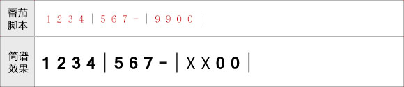
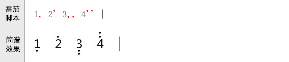
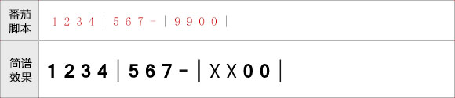
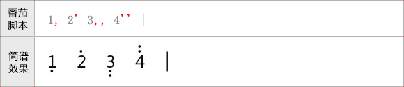

普通音符
普通音符使用“1-7”数字表示，对应简谱的“1、2、3、4、5、6、7”这7个音符。增时线使用“-”表示。如下图：
休止符
休止符使用数字“0”表示，而数字“8”则表示隐藏的休止符（在谱面上不可见，但是占据相应的空间）。
节奏音符
节奏音符“X”使用数字“9”表示。
示例：

高低音的表示
高音使用“'”表示，低音使用“,”表示。跟在数字后面即可。高低音符号可以有多个，如下图所示：

普通音符使用“1-7”数字表示，对应简谱的“1、2、3、4、5、6、7”这7个音符。增时线使用“-”表示。如下图：
休止符使用数字“0”表示，而数字“8”则表示隐藏的休止符（在谱面上不可见，但是占据相应的空间）。
节奏音符“X”使用数字“9”表示。
示例：

高音使用“'”表示，低音使用“,”表示。跟在数字后面即可。高低音符号可以有多个，如下图所示：
